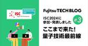

fltech - 富士通研究所の技術ブログ
https://blog.fltech.dev/
富士通研究所の研究員がさまざまなテーマで語る技術ブログ
フィード

ISC 2024に参加・発表しました #3 ～ここまで来た！ 量子技術最前線～
fltech - 富士通研究所の技術ブログ
こんにちは、量子研究所で量子プラットフォームの研究開発を担当している中尾です。私が所属する量子研究所は、2024年5月12日から16日にドイツのハンブルグで開催されましたスーパーコンピュータ関連技術の国際学会展示会ISC High Performance 2024（https://www.isc-hpc.com/）に現地参加しました。この国際会議には富士通から複数のメンバーが現地参加したため、三回に分けて報告します 。今回が最後の三回目で量子コンピューティング技術の最新の成果のポスター発表と技術展示についてです。
11日前
Democratizing the use of AI with FUJITSU-MONAKA
fltech - 富士通研究所の技術ブログ
Introduction The growth of artificial intelligence (AI) is mainly driven by three factors – Algorithmic Innovation, Data & Compute. AI development is at an inflection point, as researchers developed larger models and larger data sets, the size of the models and volume of the data sets have grown bey…
12日前
1st place in the WeatherProof Challenge (CVPR 2024 UG2+)
fltech - 富士通研究所の技術ブログ
Hello, I am Nan Zhang, from Fujitsu Research & Development Center Co, Ltd. Recently, we participated in WeatherProof challenge (CVPR 2024 UG2+ Track 3). And we won the first place on the final leaderboard. In this blog, I will introduce the challenge information and our solution.
14日前

ISC 2024に参加・発表しました #2 ～FUJITSU-MONAKAプロセッサとは？～
fltech - 富士通研究所の技術ブログ
こんにちは、富士通研究所 先端技術開発本部の落合涼太、湊祐介です。富士通が開発しているプロセッサ「FUJITSU-MONAKA」に関する富士通の活動を展示発表するため、2024/05/12～5/16にドイツのハンブルクで開催された国際会議ISC High Performance 2024（https://www.isc-hpc.com/）に現地参加してきました。 この国際会議には富士通から複数のメンバーが現地参加したため、参加したメンバーのリレー方式で3編に分けて報告します 。 第2回目は先端技術開発本部 の展示説明内容とソフトの動向調査についてです。
14日前
ISC2024に参加・発表しました #1 ～HPCシステムの最新動向を知る！～
fltech - 富士通研究所の技術ブログ
こんにちは、富士通研究所コンピューティング研究所の小田嶋哲哉です。去年（2023年）に引き続き、文部科学省の科学技術試験研究委託事業「次世代基盤に係る調査研究」の一環として、2024年5月12日～16日にハンブルク（ドイツ）で開催された国際会議ISC2024 (https://www.isc-hpc.com/) に現地参加し、コンピューティング基盤の動向調査を行ってきました。今回は複数のメンバーが現地参加をしていることから、それぞれがISC2024で得られた知見、企業展示内容などをまとめた記事を3本連載していく予定です。本投稿では、第1回目として動向調査結果、特に大規模HPCシステムの動向につ…
18日前
交通映像監視の特長のご紹介
fltech - 富士通研究所の技術ブログ
こんにちは、富士通研究開発中心有限公司（Fujitsu Research & Development Center Co, Ltd.）のZhang Nanです。今日はFujitsu Kozuchiに搭載されている交通映像監視をご紹介します。
20日前
Introducing Traffic Image Surveillance
fltech - 富士通研究所の技術ブログ
Hello, I'm Zhang Nan, from Fujitsu Research & Development Center Co, Ltd. Today, I would like to introduce an exciting new AI core engine –Traffic Image Surveillance –that is now available from Fujitsu Kozuchi.
20日前
Introducing Smart Enterprise Data Assistant
fltech - 富士通研究所の技術ブログ
Hello, I'm Zhongguang Zheng from our Artificial Intelligence Laboratory. Today, I would like to introduce an exciting new AI core engine, - Smart Enterprise Data Assistant – which is now available from Fujitsu Kozuchi.
25日前
Smart Enterprise Data Assistant の特長のご紹介
fltech - 富士通研究所の技術ブログ
こんにちは、人工知能研究所のZhongguang Zhengです。今日はFujitsu Kozuchiに搭載されているSmart Enterprise Data Assistant をご紹介します。
25日前
世界的にAI開発で需要が高まっているGPUを効率良く利用するAI Computing Broker技術
fltech - 富士通研究所の技術ブログ
こんにちは、コンピューティング研究所の笠置です。 今回は世界的なGPU不足に対応するAI Computing Broker技術をご紹介します。 この技術は5月12日から16日にドイツ・ハンブルグで開催されたスーパーコンピュータの国際学会ISC 2024にて展示いたしました。
1ヶ月前
Security Audit Automation: A new frontier in security with large language models
fltech - 富士通研究所の技術ブログ
Hello, I am Tanaka from the Security AI Team at Fujitsu Research. We are pleased to announce that we have made our security audit automation technology available to the public on the Fujitsu Research Portal, where you can try out technologies developed by Fujitsu.
1ヶ月前
Composite AI ―最適化AI自動生成― のご紹介
fltech - 富士通研究所の技術ブログ
こんにちは、人工知能研究所の岩下です。今日は、Fujitsu Kozuchiに搭載されている Composite AI について紹介します。
1ヶ月前
Introducing Composite AI – Generate optimization AI automatically –
fltech - 富士通研究所の技術ブログ
Hello, I'm Hiroaki Iwashita from our Artificial Intelligence Laboratory. Today, I would like to introduce an exciting new AI core engine – Composite AI – which is now available from Fujitsu Kozuchi.
1ヶ月前
セキュリティ監査の自動化：大規模言語モデルが切り拓く新たなセキュリティ対策
fltech - 富士通研究所の技術ブログ
こんにちは。データ＆セキュリティ研究所の田中です。 この度、富士通が研究開発した技術を試すことができるFujitsu Research Portalにて、 セキュリティ監査自動化技術を一般公開しました。
1ヶ月前
Fujitsu Composite AI at Microsoft Build 2024
fltech - 富士通研究所の技術ブログ
こんにちは、人工知能研究所の小橋と山中です。 5月21日から23日にアメリカ・シアトルで開催されたマイクロソフト社(MS)の開発者向けイベントMicrosoft Build 2024で、MSのAIオーケストレーション機能であるSemantic KernelとFujitsu Composite AIのコラボをプレゼンしてきましたので、紹介します。
1ヶ月前
Introducing the Fujitsu AutoML for Vision
fltech - 富士通研究所の技術ブログ
Hello, I'm Hiroaki Yamane from the Artificial Intelligence Laboratory. Today, I would like to introduce an exciting new AI core engine – Fujitsu AutoML for Vision – which is now available from Fujitsu Kozuchi. This article is part of a series introducing the AI core engines of Fujitsu Kozuchi. At th…
1ヶ月前
Fujitsu AutoML for Visionの特長のご紹介
fltech - 富士通研究所の技術ブログ
こんにちは人工知能研究所の山根です。今日は、Fujitsu Kozuchiに搭載されているFujitsu AutoML for Visionについてご紹介します。 このブログは、Fujitsu Kozuchi のAIコアエンジンを紹介する連載ブログのひとつです。ブログの最後で、これまでのブログをまとめておさらいできます！ 画像内の物体を認識できるAIを開発するには、大量の学習データの準備、大規模な計算リソース、そしてAIに関する専門的な知識が必要です。この課題を解決するFujitsu AutoML for Visionを紹介します。
1ヶ月前
Fujitsu Auto Data Wranglingの特長のご紹介
fltech - 富士通研究所の技術ブログ
こんにちは、人工知能研究所のLei Liuです。今日はFujitsu Kozuchi に搭載されているFujitsu Auto Data Wranglingについてご紹介します。
2ヶ月前
Introducing Fujitsu Auto Data Wrangling
fltech - 富士通研究所の技術ブログ
Hello, I'm Lei Liu from our Artificial Intelligence Laboratory. Today, I would like to introduce an exciting new AI core engine - Fujitsu Auto Data Wrangling – which is now available from Fujitsu Kozuchi.
2ヶ月前
Advance Notice for the second blog series about Fujitsu Kozuchi AI core engines
fltech - 富士通研究所の技術ブログ
Hello. I am Fukuda from the Fujitsu AI laboratory. Fujitsu provides advanced AI technology through the Fujitsu Kozuchi, and we want to encourage people to try our AI technologies to prove their value and benefit their work. Based on users’ impressions and feedback, we will continue to improve these …
2ヶ月前
Fujitsu Kozuchi AIコアエンジン紹介Blog連載第二弾事前告知
fltech - 富士通研究所の技術ブログ
こんにちは。人工知能研究所の福田です。富士通ではFujitsu Kozuchiを通じて研究開発した先端AI技術を提供しています。ここで提供されている技術をより多くの方に体験していただき、皆さまのお役に立てるかどうかの判断材料にしていただくとともに、使ってみた感想やフィードバックによってより良い技術に進化させていきたいと考えています。 前回、Fujitsu Kozuchiに搭載されている５つの技術を連載企画として紹介させていただきました。Fujitsu Kozuchiには富士通で開発される最先端の技術が日々追加・更新されております。そこで前回紹介できなかった新しい技術について、連載第二弾として５…
2ヶ月前
ICCE2024で企業セッションを開催＆研究発表してきました
fltech - 富士通研究所の技術ブログ
こんにちは。D&S研プライバシーCPJの安部と花田です。今回は2024年1月5～8日に開催された国際会議であるICCE2024に参加し、インダストリアルセッション、口頭発表を行ったので報告します。
3ヶ月前
Trustable Internet：任意の言説に対する真偽判定技術が体験できます
fltech - 富士通研究所の技術ブログ
こんにちは、データ＆セキュリティ研究所の宮前です。Trustable Internetチームは、昨年末にFujitsu Research Portal上で偽情報対策技術の体験デモを公開しましたが、今回は、ユーザが入力した任意の言説の内容や、指定されたWebページの内容を自動的に真偽判定するWebアプリを公開しました。 この技術は、インターネット上で真偽不明な情報に遭遇した人が、ファクトチェック団体の判定を待つことなく、真偽を手軽かつ迅速に確認できるようにするための技術で、インターネット上の情報を安心して利用できる世の中へ変わることを期待しています。 本ブログ記事では、一般の自動ファクトチェック…
3ヶ月前
決定グラフ型量子シミュレータのご紹介
fltech - 富士通研究所の技術ブログ
こんにちは、量子研究所の木村悠介です。富士通では量子コンピュータ実機のほかに、量子シミュレータも開発しています。 このページでは、グラフ構造を用いて効率性を高めた、独自開発の決定グラフ型量子シミュレータを紹介します。
3ヶ月前
信頼できるAIへ：大規模言語モデルのバイアスを診断する新技術の導入
fltech - 富士通研究所の技術ブログ
こんにちは、AIトラスト研究センターのLLMバイアス診断チームです。今回は、富士通Kozuchiから公開されたAIコアエンジン「富士通LLMバイアス診断」をご紹介します。 LLMバイアス診断とは、大規模言語モデル(LLM)のバイアスを様々な視点から診断し、利用者が目的に応じて最適なLLMを選択できるように支援する技術です。これは最先端AI技術の検証を加速させる富士通KozuchiのAIコアエンジンの一つです。 LLMの利用は広い分野で拡大中であり、医療、教育、ジャーナリズム、マーケティングなどの分野での応用が期待されています。一方で、LLMは人間と同じようなバイアスを持つという報告や調査研究が…
3ヶ月前
Towards trusted AI: introducing a new technology to diagnose biases in large language models
fltech - 富士通研究所の技術ブログ
Hello, we are the LLM Bias Diagnosis team from the AI Trust Research Centre. Today, we would like to introduce an exciting new AI core engine – the Fujitsu LLM Bias Diagnosis, which is now available from Fujitsu Kozuchi. The LLM Bias Diagnosis is a technology that can diagnose biases in large langua…
3ヶ月前
Federated SNS～分散型SNS×生成AIチャットボットによるコミュニケーション活性化の効果検証実験と活用アイデアソンを実施
fltech - 富士通研究所の技術ブログ
こんにちは、データ＆セキュリティ研究所の仲道です。当研究所では、分散型SNS上で生成AIチャットボットとユーザが相互にコミュニケーションする次世代コミュニケーションサービス基盤Federated SNSを開発しています。本記事では、Federated SNSの概要に加え、私たちが実施した効果検証実験とアイデアソンの結果について紹介します。この記事を読んで、Federated SNSに関心を持っていただけたら、その感想やフィードバックを私たちにお聞かせいただけると、今後の開発に大いに役立ちます。
4ヶ月前
ガウス過程を用いたVQEのためのノイズ軽減手法
fltech - 富士通研究所の技術ブログ
こんにちは。人工知能研究所の竹森です。 量子コンピュータを用いることにより、様々な問題を高速に解けることが知られていますが、 現時点で実現されている量子コンピュータには誤り訂正がなく、十分な精度が得られないという課題があります。 この技術ブログでは、VQE (Variational Quantum Eigensolver)と呼ばれる量子化学計算のためのアルゴリズムを誤り訂正のない量子コンピュータ上で実行する際の、ノイズ軽減手法について紹介します。 以下で紹介する技術は、以下の私たちの論文(コンピューティング研究所、量子研究所との共著論文)の中で提案されてるものです。
4ヶ月前
RL-based MFA（Robust Localization-based Multi Factor Authentication）のデモアプリを公開
fltech - 富士通研究所の技術ブログ
こんにちは、データ＆セキュリティ研究所の井上です。 インターネット上のデバイスの地理的位置を高信頼に推定するRobust Localization技術を活用したアプリのデモ版をFujitsu Research Portalに公開しました。 位置の要素に基づく新しいMFA（Multi-Factor Authentication）の体験をお試しいただけます。
4ヶ月前
Fujitsu Quantum Day に現地参加しました！
fltech - 富士通研究所の技術ブログ
こんにちは、量子研究所で量子アルゴリズムの研究をしております金杉翔太です。今回は2024年1月25日にオランダのデルフトで開催された富士通初のグローバル量子コンピューティングイベント 「Fujitsu Quantum Day」についてご紹介します。
4ヶ月前